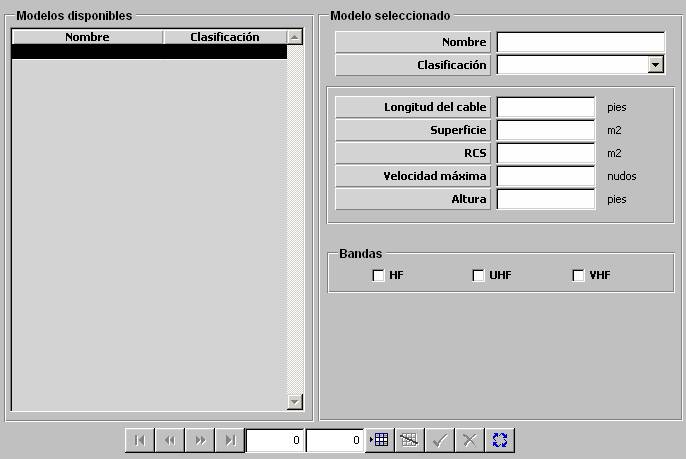

Boyas de Comunicaciones

Descripción de los parámetros:
Longitud del cable: Este parámetro determina la máxima longitud del cable de la boya de comunicaciones y por tanto determina la máxima profundidad a la que puede ser desplegada.
Unidades: pies
Rango: 0 – 9999
Superficie: Este parámetro es tenido en cuenta por el modelo de visual para calcular la distancia a la que la boya es detectada cuando se encuentra desplegada.
Unidades: m2
Rango: 0 – 100
RCS: Este parámetro es tenido en cuenta el modelo de radar para calcular la distancia a la que la boya es detectada cuando se encuentra desplegada.
Unidades: m2
Rango: 0 – 1000
Velocidad Máxima: Este parámetro es tenido en cuenta por el modelo de dinámica como límite de velocidad para la plataforma submarino cuando se encuentra con la boya de comunicaciones desplegada.
Unidades: nudos
Rango: 0 – 100
Altura: Este parámetro es tenido en cuenta los modelos de visual y radar para calcular la distancia a la que la boya es detectada cuando se encuentra desplegada.
Unidades: pies
Rango: 0 – 9999
Banda (HF, VHF, UHF): Este parámetro determina la banda para las que se considera que la boya tiene antena, y por tanto, aquellos equipos de comunicaciones que trabajen en la banda seleccionada, podrán transmitir y recibir cuando el submarino se encuentre sumergido y con la boya desplegada.